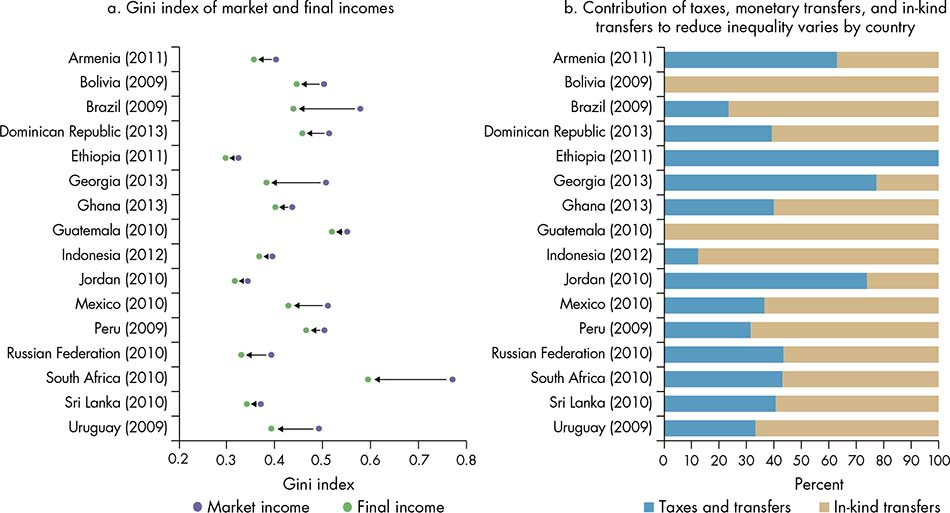
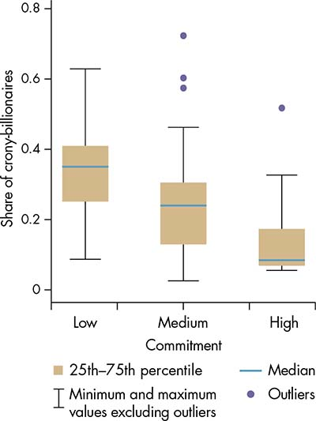
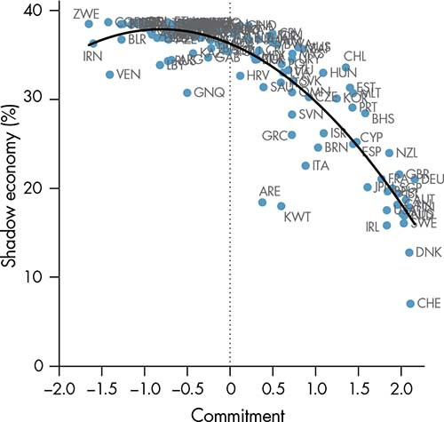
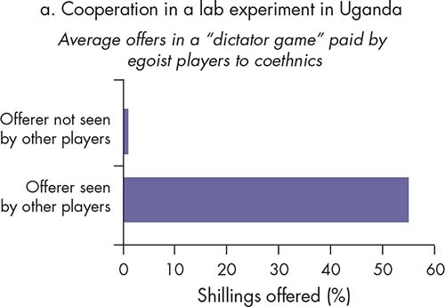
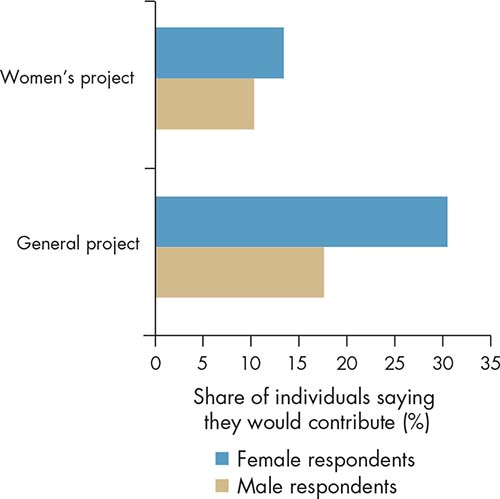
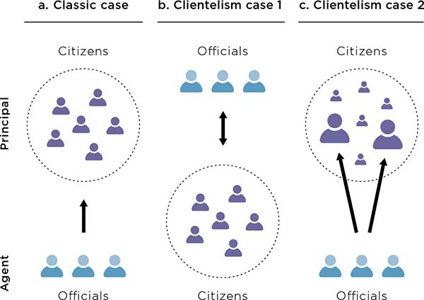
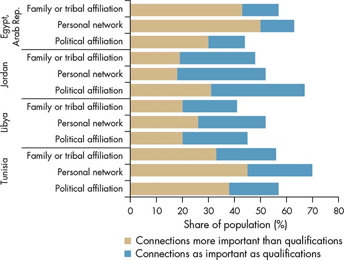
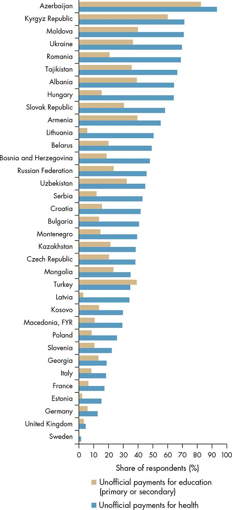
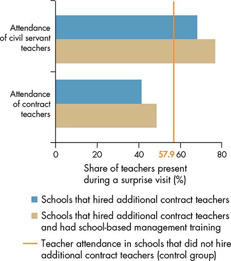

“We are the 99%” became the slogan of street demonstrators in the United States in August 2011 as they demanded public action against rising income inequality and the growing perception of the unfairness of the economic system after the 2008–09 global financial crisis. Observers viewed the mounting concentration of income and wealth as a threat to the sustainability of an institutional setting that responds to the needs of all citizens (Stiglitz 2011, 2012). Concerns about how to tackle the “unfair” features of the global economic system were gaining momentum throughout the world.
Indeed, as discussed in chapter 2, the perception of whether policies and rules are fair matters when it comes to inducing better cooperation in society.1 Although the concept of fairness is complex, it certainly involves some dimensions related to outcomes and others related to process.2 Through this lens, equity is associated with fairness to the extent that outcomes (income, educational attainment, or ownership of assets such as land) and the opportunities for individuals to pursue a life of their choosing are independent of their circumstances such as their ethnicity, race, gender, location, or other factors beyond their control. However, in addition to outcomes being independent of circumstances beyond their control, inequality in outcomes matters per se. Such inequality, in fact, reflects a differential ability of certain actors and groups to influence policy making and the allocation of resources in society (box 6.1).3
Box 6.1 What is equity?
This Report views equity in terms of both equal opportunities for individuals to pursue a life of their choosing, independent of circumstances beyond their control, and inequality in outcomes, such as income or consumption.a
Equality of opportunities requires that all individuals have the same chances, independent of circumstances beyond their control. Inequality in outcomes reflects the notion that differences in the levels of outcomes among individuals also matter. Equity thus includes poverty, defined as extreme deprivation in outcomes. The “acceptable” level of inequality in outcomes is a decision that is up to each society. Yet, in addition to its normative value, the concept is of particular interest in the context of this Report in terms of its role in shaping the bargaining power of current and future actors, which can influence the opportunities of the next generation.
Inequality in outcomes must be a matter of concern in public policy, as much as inequality of opportunities, because it is a manifestation of asymmetries in the influence of actors to make governance responsive to their needs and interests. Empirically, circumstances typically explain only about 40 percent of inequality in socioeconomic achievement, though the number depends on the definition of the outcome being analyzed (Ferreira and Peragine 2015). Efforts to equalize opportunities will not eliminate persistently high levels of outcome inequality if they do not also address the unequal access to voice in the policy arena.
Source: WDR 2017 team.
a. This definition builds on the definition in the World Development Report 2006: Equity and Development: “By equity we mean that individuals should have equal opportunities to pursue a life of their choosing and be spared from extreme deprivation in outcomes” (World Bank 2005, 2). This Report extends this definition to also cover inequality in outcomes.
Perception of whether policies and rules are fair matters when it comes to inducing better cooperation in society.
As explained in chapter 1, this Report builds on the premise that societies care about prosperity and how prosperity is shared. However, ultimately growth and inequality are jointly determined (Chenery and others 1974; Ferreira 2012). At a given moment in time, the productive assets and opportunities that individuals have determine their capacity to generate income and contribute to growth, given market conditions. In this way, economic growth reflects the aggregate productive capacity of different individuals and the accessibility and functionality of markets. In the long run, however, the potential for people to accumulate and productively use assets is influenced by policy decisions such as the allocation of public spending to public education, health, or infrastructure. Inequality and growth are thus tightly linked, and the way in which the benefits from growth translate into socioeconomic achievements across different individuals and groups is determined by how actors interact and make policy decisions about redistribution.
Many policies can enhance equity. Governments use fiscal instruments—taxes and transfers—to redistribute income ex post, and they use public spending—via the provision of public goods and services—to reshape the distribution of “opportunities” and foster mobility within and across generations (figure 6.1). The provision of quality public goods and services can help equalize opportunities, allowing individuals to increase their stock of assets—for example, in terms of human capital such as education, health, or skills; financial capital; or physical capital such as land or machinery. Promoting an environment of investment and innovation can expand access to opportunities as individuals use their capital and labor to generate income—for example, utilizing their skills to participate in the labor market or using their land for agricultural production. Social protection systems—including safety nets, subsidies, and transfers—also act as a mechanism for equity, redistributing resources to the most vulnerable.
Figure 6.1 States can improve equity by intervening in the distribution of final outcomes through taxes and transfers and by providing access to basic services

Sources: WDR 2017 team, based on Inchauste and Lustig, forthcoming, table 1.1.
Note: In panel a, market income refers to income before taxes and transfers. Final income is defined as income after direct and indirect taxes and transfers, also taking into account transfers in kind (access to basic services). The graph presents lower-bound estimates of redistributive impact
Pro-equity policies can boost overall growth in the medium and long term, but they also can adversely affect specific groups, particularly in the short term. The groups likely to lose out from these policies—in terms of income, rents, or influence—may attempt to undermine their adoption or implementation. For example, influential actors may block land reform policies or shape the allocation of public spending for their personal benefit. Civil servants may undermine the access and quality of public services. When societies have high levels of inequality, such inequalities are reflected in the unequal capacity of groups to influence the policy-making process, which makes inequality even more persistent (box 6.2).
Box 6.2 A vicious cycle: How inequality begets inequality
In societies in which inequality is high, the effectiveness of governance to deliver on equity outcomes can be weakened structurally because those at the top of the income ladder not only have control over a disproportionate amount of wealth and resources, but also have a disproportionate ability to influence the policy process. This type of power asymmetry may lead even a benevolent planner, who is fair and freely elected and is seeking efficiency (and even more so, a corrupted official) to end up systematically favoring the interests of those at the top over those at the bottom. The result is a more inefficient allocation of resources and further entrenchment of existing inequalities over time (Esteban and Ray 2006).
This undue influence can be illustrated by looking at countries in which lobbying is integrated in the political system. Igan and Mishra (2014) find compelling results using data on the politically targeted activities of the financial industry (including lobbying, campaign contributions, and political connections) from 1999 to 2006 in the United States. They find that lobbying expenditures and network connections are associated with a greater probability that legislators will switch their position from advocating tighter financial market regulations to voting in favor of deregulation. More broadly, levels of commitment are lower in countries with higher shares of billionaires whose wealth comes from sectors prone to capture and rent-seeking, including those who are heavily dependent on government concessions such as in the financial, real estate, and natural resources sectors (figure B6.2.1).a
Figure B6.2.1 Capture is associated with lower levels of commitment

Sources: WDR 2017 team estimates, based on Forbes, “The World’s Billionaires,” http://www.forbes.com/billionaires/, and WDR 2017 Governance Indicators.
Note: Commitment is measured as protection of property rights, contract enforcement, and lack of arbitrary expropriation without proper compensation. The classification of commitment levels is as follows: low = < 0; medium = 0–2; high = > 2. The categories comprise 11, 29, and 9 countries, respectively. Crony-billionaires are defined as the subset of billionaires whose fortunes belong to the following sectors: agriculture, communication, construction, oil, gas, chemicals and other energy, financial and insurance activities, mining and quarrying, real estate activities, and conglomerates.
Theory suggests that, in most cases, the overall gains from equity-enhancing redistribution policies are greater than gains from inequality-neutral growth policies for the top 1 percent or 5 percent (Milanović 2016). Nevertheless, for those at the top, policies that increase inequality can be preferable to those that would enable a more efficient allocation of public resources and lead to higher overall economic growth. For example, Stiglitz (2012) finds that as market income became more unequal in the United States, the government also approved more generous tax cuts on capital gains. Unsurprisingly, these tax cuts mainly favored those who were already at the top of the income distribution (including the members of Congress who were voting for those policy reforms).
Inequality affects governance not only by means of capture, but also by weakening how individuals perceive the fairness of the society they live in. When a country fails to deliver on its commitment to improve and equalize opportunities for all citizens, and it responds only to the interests of those at the top of the distribution, citizens may decide to opt out of or exit the existing political processes instead of contesting the outcomes in the policy arena. This decision leads to a weakening of cooperation. Even in countries in which the benefits of economic growth reach all members of society, the discontent arising from a perception of an increase in relative deprivation (when those at the top of the distribution are moving ahead more quickly than those at the bottom) may be larger than the contentment from an absolute improvement in living standards—as documented, for example, for Europe and central Asia by Dávalos and others (2016).
The concern about the vicious cycle of inequality and governance, in which initial conditions of inequality promote a policy arena that further entrenches that inequality, is exacerbated by the surge in the concentration at the top of the income and wealth distributions in many countries (Atkinson, Piketty, and Saez 2011; World Bank 2016). Understanding the entry points to break this persistent loop is crucial to restoring a social contract that can promote greater and more equal access to opportunities for everyone.
Source: WDR 2017 team.
a. During the 2015–16 election cycle in the United States, the largest disbursement (27 percent of all outlays) came from the financial sectors, which include insurance companies, securities and investment firms, real estate interests, and commercial banks (Center for Responsive Politics). These are the sectors with the largest number of billionaires (WDR 2017 team, based on Forbes, “The World’s Billionaires,” http://www.forbes.com/billionaires/).
To increase the success of reforms opposed by powerful interests, it may be necessary to modify the bargaining process by changing the incentives or preferences of the actors who bargain or allowing new actors to contest policies. At times, members of the elite may have incentives to become aligned with actors pushing for reforms in taxation and public spending that favor the poor. For example, the first antipoverty programs in 19th-century England and Wales were pushed by the top 1 percent of the landed gentry. Against the backdrop of the French Revolution, this group sought to keep cheap labor in rural areas and prevent it from migrating to urban areas, at a time when the French Revolution spurred fear of revolts (Lindert 2004; Ravallion 2015). Increasing the participation of disadvantaged groups can also help change the incentives of actors who bargain over policies. Direct participation and contestation in decision making can improve cooperation as well. For example, in Ghana, when businesses were involved in tax collection they became more likely to pay their taxes (Joshi and Ayee 2009). By building common interest, political organization can aggregate citizens’ preferences and demand in policy- making processes. However, such reforms can be complex and frequently involve setbacks.
This chapter explores how power asymmetries matter for equity. It begins by looking at how they can lead to breakdowns in institutional functions, constraining the effectiveness of policies. The second part of the chapter then looks at the levers of change and how constraints can be alleviated to level the playing field and make policies more responsive to all.
Although income inequality between countries has declined over the last 20 years as low- and middle- income countries have grown faster than those at the top of the world income distribution, the level of income inequality within countries has increased.4 This trend can be explained in part by governance environments that prevent the successful adoption and implementation of policies to enhance equity.
This chapter considers two key policy areas that matter for equity: investment that helps equalize opportunities through the accumulation of assets, and policies that increase access to economic opportunities to utilize those assets. As emphasized in the World Development Report 2006: Equity and Development (World Bank 2005), the opportunities of individuals arise to a considerable extent from investments in public goods and services, particularly in terms of health and education. But such investments depend on collecting and redistributing resources. Indeed, no high-income country has improved equity without significant taxation and public spending to protect individuals against shocks (such as illness, unemployment, and old age) and to reduce welfare disparities within and across generations (Barr 2001; Lindert 2004). In addition, for individuals to realize the returns on such investments, they need access to economic opportunities in adulthood, especially those opportunities that allow them to use the human capital they have acquired.
Although the focus of this chapter is not on labor markets, it does touch on important determinants of labor income inequality. Consider Latin America, the most unequal region in the world, which has experienced an important decline in income inequality over the last two decades (Rodríguez- Castelán and others 2016). This decline is largely explained by the decline in labor income inequality—associated with an expansion of education—as well as the decline in nonlabor income inequality, largely explained by more progressive government transfers (Lustig, López-Calva, and Ortiz-Juárez 2015). Indeed, the provision of quality public goods and services as a means of leveling the playing field and reducing poverty has been unambiguous (World Bank 2005).
As argued in this Report, the effectiveness of policies to achieve equitable development is related to how well institutions perform certain key functions. Policies that require long-term objectives, for example, are often truncated (a commitment failure). Effective policies tend to have long-term objectives (extending beyond the political cycle), matching resources, and well-aligned incentives for the actors involved. Actors must trust that promises will be kept, even in the face of changing circumstances. Often, however, the incentives of public officials become misaligned with those of the constituencies they are meant to serve. In clientelistic settings, the interaction between public officials and citizens is distorted: public officials “buy” the votes of citizens in exchange for short-term benefits (see box 6.4 later in this chapter for a definition of clientelism). Or public officials may become accountable only to certain influential groups, or “clients,” promoting their interests in exchange for their political support.
A low commitment to providing quality public services is one of the main characteristics of the poorest countries in the world, as well as the most unequal ones. Pro-equity policies require state capacity, including a bureaucracy able to collect taxes and teachers well trained to educate children. A professional bureaucracy has been identified as a significant feature of any state seeking to achieve development (Rauch and Evans 2000). “Weak states,” particularly in Sub-Saharan Africa, are characterized by a limited state presence beyond the capital and coastal areas and by a limited ability to tax (Migdal 1988; Herbst 2000). In middle-income countries with high inequality, such as in Latin America, “truncated” welfare states exclude a large share of the population from public spending (De Ferranti and others 2004; Ferreira and others 2013).
When the commitment to deliver on policies, such as the provision of quality services, breaks down, individuals tend to opt out and demonstrate less cooperation in, for example, their willingness to pay taxes. Figure 6.2 shows how lower levels of commitment are associated with larger “shadow economies,” in which individuals opt out by not complying with the existing rules. Collecting the taxes needed to fund investments in public goods crucially requires the willingness of taxpayers—individuals and firms—to cooperate and comply with the rules. Perceptions of free-riding by others or low-quality services can lead to breakdowns in cooperation. In middle-income countries with high inequality, such as in Latin America, citizens may exit—for example, by opting out of basic public education—because they obtain little from the state (Hirschman 1970; Perry and others 2007). The low quality of service provision prompts the upper-middle class to demand private services, which in turn weakens their willingness to fiscally cooperate and contribute to the provision of public goods—a perverse cycle. At other times, actors potentially affected by policies may be excluded from their design, undermining their incentive to cooperate and weakening compliance.
Figure 6.2 When commitment is low, countries exhibit low compliance (high shadow economy)

Sources: Commitment: WDR 2017 Governance Indicators; shadow economy: Schneider, Buehn, and Montenegro 2011.
Note: “Shadow economy” is defined as the share of the market-based legal production of goods and services that is deliberately concealed from public authorities for any of the following reasons: (1) to avoid payment of income, value added, or other taxes; (2) to avoid payment of social security contributions; (3) to avoid having to meet certain legal labor market standards such as minimum wage, maximum working hours, and safety standards; and (4) to avoid complying with certain administrative procedures such as completing statistical questionnaires or other administrative forms (Schneider, Buehn, and Montenegro 2011). The variable “shadow economy” is the predicted value of the measure, controlling for the gross domestic product (GDP) per capita. “Commitment” is measured as protection of property rights, contract enforcement, and lack of arbitrary expropriation without proper compensation.
What makes people cooperate so they do not free-ride on others and do comply with the rules? Cooperative behavior results in part from the credibility of sanctions against those who do not comply. For example, ethnic networks may be able to induce cooperation in the form of school funding among their members because they have more credible sanctions against free-riders (Miguel and Gugerty 2005). This view was tested in a lab game with players from a multiethnic neighborhood in Kampala, Uganda. Players in charge of allocating resources shared much higher amounts with others when their actions were taken in full view of others than when they were not. In both cases, other players were from their same ethnic group. These results indicate that for individuals who are not willing to share, the risk of a social sanction shapes their behavior rather than altruism toward coethnics (figure 6.3, panel a).
Cooperation is enhanced by commitment. The credibility of policy makers is essential for the enforcement of sanctions and the payment of compensation when redistribution reforms are carried out. Consider the difficulties in reforming energy subsidies. Such subsidies are often inequitable because they benefit relatively richer households, which devote a larger share of their total consumption to energy-related goods. They are inefficient because their high fiscal cost precludes other public spending (Coady and others 2015). Therefore, eliminating these subsidies while setting up compensatory measures for the poor could improve both efficiency and equity. Yet, virtually all countries that have attempted energy subsidy reforms have faced social and political unrest. This is often because policy makers are not credible in their commitment to redistribute the savings from efficiency gains.
Perceptions of fairness also matter for cooperation. Experimental evidence indicates that individuals adjust their behavior and are willing to incur a cost in order to sanction behaviors that they perceive to be unfair. More specifically, the fairness of the processes through which decisions are made matters. Participation in the decision-making process has an intrinsic value in allowing more legitimate choices (Habermas 1996; Rawls 1997). But participation may also have an instrumental value by increasing cooperation—for example, in the form of contribution to the funding of projects or in the form of compliance with decisions made. Experimental evidence supports this view (Dal Bó, Foster, and Putterman 2010; Goeree and Yariv 2011). A study from Indonesia indicates greater cooperation when participatory processes are in place: individuals are more willing to contribute to projects when the whole village can cast a vote directly in plebiscites than when the usual decision-making meetings, run by representatives, are held (figure 6.3, panel b).
Figure 6.3 Fear of sanctions and participation in decision-making processes promote cooperation

Source: WDR 2017 team, based on Habyarimana and others 2007.
Note: The figure shows the average offer paid by egoist players (those who always employ the most selfish strategy available in all rounds of the game) in a “dictator game”—that is, a game in which a player (the dictator) determines how to split an endowment with other players. Subjects were given 1,000 Ugandan shillings—10 coins of 100 shillings each—and asked to distribute them among themselves and the two other players in any way they pleased. The figure shows the “benchmark coethnic” measure: any pair of players who identified themselves as belonging to the same ethnic category in their pre-experiment questionnaire was coded as coethnics.

Source: WDR 2017 team, based on Olken 2010.
Note: In an experiment conducted in rural Indonesia, villages were randomly assigned to choose development projects either through meetings at which representatives would make the selection (the majority of attendees were government officials, neighborhood heads, and those selected to represent village groups) or through direct election plebiscites (in which all adults eligible to vote in the last national parliamentary election could vote). The villages had to select a general project and a women’s project. After conclusion of the project selection process, respondents were asked about their plans to make voluntary contributions to the project (labor, money, food).
Fairness and “process legitimacy” also matter for economic opportunities. The credible and consistent enforcement of laws and regulations, including property rights, can help expand opportunities and level the playing field. For example, if property rights are secure only for some, then those who are not protected as much as others will respond by underinvesting (Goldstein and Udry 2008). Furthermore, if individuals think their effort will not be rewarded because of discrimination, they may exert less effort (Hoff and Pandey 2006).
In the Indian state of Maharashtra, villages dominated politically by the Maratha caste are 10 percent less likely to implement nationally funded antipoverty programs than other villages, even though their population—who votes in free elections—consists largely of poor or landless laborers.5 Why? A credible explanation is that the local landed class from the Maratha caste uses its political power—leading village councils—to block antipoverty programs, “buying” votes instead through the provision of informal insurance to voters in times of financial crisis. The Marathas are particularly successful in clientelist strategies thanks to the other “services” they can provide, such as their trading networks. Prevailing social norms in the villages—the caste system—help the Marathas maintain their political influence because they are the traditionally dominant caste in Maharashtra and are better able to enforce sanctions (Anderson, Francois, and Kotwal 2015).
On paper, allowing village councils to select the beneficiaries of antipoverty programs in a setting in which the councils are freely elected should enhance equity outcomes: local governments can be held accountable, and beneficiaries can better observe and control their effort because of their proximity. Village councils, in theory, would also be better at targeting beneficiaries and selecting public works projects that are most useful for the community. In reality, however, as the example in Maharashtra shows, local influential actors may take advantage of their role in the allocation of resources to block redistribution, exchanging political support for short-term benefits.
More generally, asymmetries in bargaining power shape how commitment and cooperation are sustained, ultimately affecting whether equity- enhancing policies are adopted and implemented. Although a policy to improve equity may look good on paper, such as strengthening access to land, it may also be prone to clientelism and capture (box 6.3). Groups that directly influence policies—called elites in this Report—may have more bargaining power than others because of the existing inequalities in income or wealth, or the difficulties that other actors face in organizing and lobbying effectively. Indeed, in the presence of weakly organized constituencies, political elites may have fewer incentives to invest in public goods and improve equity. They may instead engage in narrow patron-client relationships that maintain their ability to influence decision making.
Box 6.3 Efforts to expand and secure access to land often lead to capture
Expanding and securing access to land are important policy areas in efforts to increase economic opportunities. Indeed, in 2008 an estimated 75 percent of the world’s poor lived in rural areas and their incomes depended, directly or indirectly, on agriculture (Ravallion 2015). Thus, improving and securing their access to land are important to increase investments and productivity. More equitable access to land has also been associated with higher equity and efficiency, both directly and indirectly, through better institutions and increased citizen participation—an important element of collective action.a
Land tenure reforms, however, can be used for patronage. The security of land tenure varies considerably across and within countries, depending greatly on systems of inheritance, existing social hierarchies, and gender norms—all of which can hamper the ability of disadvantaged groups to improve their livelihoods. In Vietnam, for example, individuals with connections to politicians and bureaucrats have much more tenure security than others (Markussen and Tarp 2014). In Ghana, property rights are particularly insecure for women, who are less likely than men to play local political or social roles.
Interventions to change land tenure, including in cities, have often been captured and used for patronage. In many African cities, a range of land interventions, such as land regularization and resettlement operations, have been captured by local elites and used for political patronage, including through corruption of civil servants (such as staff of the land registry). Bribes may be used to facilitate access to land, obtain formal tenure, or obtain plots for friends and political clients (Durand-Lasserve, Durand-Lasserve, and Selod 2015).
When inequality is too entrenched to expect sales and rental markets to reallocate land, land redistribution reforms become necessary. However, because of the difficulty in reaching agreement on such reforms, they often take place at times of significant political change, such as the end of colonial rule, or with strong pressure from outside, as in the Republic of Korea. When no such major political changes have occurred, land redistribution has been spurred by collective action by citizens, including peasant movements that increased pressure for reform, such as in Brazil (Binswanger-Mkhize, Bourguignon, and van den Brink 2009).
Source: WDR 2017 team.
a. For microeconomic evidence in India, see Banerjee and Iyer (2005). For a comparison of North and South America, see Engerman and Sokoloff (2002).
Although a policy to improve equity may look good on paper, it may also be prone to clientelism and capture.
This Report, like the World Development Report 2004: Making Services Work for Poor People (World Bank 2003), views service provision as a series of relationships between principals and agents. In the classic case, the official is the agent of the voter (who monitors and sanctions the agent). However, this dynamic of monitoring by citizens is often undermined by political incentives. Committing to a broad provision of public goods can be politically disadvantageous because the benefits of public goods become diluted among nonsupporters and are more difficult to monitor—and reverse. By contrast, political candidates may commit to targeted benefits for narrow groups of “clients”—such as their ethnic group or their caste—because they can more credibly deliver, and control, these benefits. For example, politicians can target input subsidies for farming to supporters, while maintaining a threat to remove the subsidies. Such arrangements ensure that supporters credibly commit to backing politicians, while politicians also have a credible tool to “punish” supporters if they defect (Bates 1981).
In such clientelist settings (see box 6.4), the traditional principal-agent relationship between citizens and officials breaks down, and accountability becomes up for sale (figure 6.4). Clientelism can affect the adoption and implementation of policies in two main ways. In the first, citizens’ expectations of politicians become skewed (some receive targeted benefits, whereas many may go without). In the second, service providers extract rents because they play a role in politicians’ reelection (Bold and others 2016). Both cases lead to breakdowns in commitments to long-term objectives.
Box 6.4 Defining and measuring clientelism
Clientelism is a political strategy characterized by giving material goods in return for electoral support (Stokes 2009). Clientelism can be viewed as a two-party encounter between a politician and a voter (Hicken 2011). It is, however, often organized in networks, which can be based on districts or regions. As a result, a central part of clientelism’s organizational structure is an intermediary or a broker, whose role is to mobilize a network of local voters in exchange for financial payment or patronage jobs. The behavior and strategy of a broker and the contractual arrangement with the national politician are thus an important element of clientelism.a
A number of studies mentioned in this chapter emphasize the negative impact of clientelism on the provision of public goods. Indeed, it can entail significant welfare costs for societies (Bardhan 2002). When it is prevalent, voters act to pursue short-term benefits rather than focus on broad policy considerations such as equitable and sustainable reforms.
Measuring clientelism is a challenge. Distinguishing empirically between public goods and private goods can be complex. For example, infrastructure projects, typically considered a public good, can be locally targeted to a specific geographic area.b By contrast, redistribution promised by politicians to win votes can be beneficial to broad groups. For example, in the cases of the Peruvian Social Fund (Schady 2000) and the investment in infrastructure in Spain from 1964 to 2004 (Solé-Ollé 2013), even though welfare-enhancing transfers were targeted to secure votes, the policies benefited large swaths of the population, beyond those targeted to win elections.
Source: WDR 2017 team, based on Wantchekon (2016).
a. See Stokes (2005); Cruz (2013); Holland and Palmer-Rubin (2015); and Schneider (2015).
b. See review in Bouton, Castanheira, and Genicot (2016).
Figure 6.4 A politician can become an agent of the provider in clientelist settings

Sources: WDR 2017 team, extending World Bank 2003 and Khemani and others 2016.
Note: Arrows indicate who is responsive to whom.
In the first form of clientelism (clientelism case 1 in figure 6.4), the interaction between public officials and citizens is distorted: rather than officials acting as the agents of citizens and voters monitoring and sanctioning officials, the dynamic becomes a bargain in which the politician “buys” the citizen’s vote for what usually are short-term gains (Khemani and others 2016). These bargains tend to be more frequent where individuals have a higher time preference for the present with respect to the future. The poor and disadvantaged are particularly vulnerable to exchanging their votes for short-term benefits in the form of transfers because their pressing needs make their discount rates for the present higher than those of the better-off. Where commitments to broad-based policies do not appear to be credible—for example, in situations with limited state capacity—such voting behavior is rational, not merely short-sighted. This clientelist bargain tends to lead to a breakdown in commitment to programmatic objectives. Evidence suggests that clientelism in the form of vote buying is associated with a lower provision of public services (Khemani 2015).
In a second form of clientelism (clientelism case 2 in figure 6.4), specific groups capture policy-making processes, reducing the incentives of public officials to adopt and implement policies for their constituency as a whole. This capture takes place when public officials grant benefits in exchange for the political support of a single-issue or homogeneous group. In this equilibrium, public officials become accountable to such groups, including—but not limited to—service providers, whose support becomes indispensable for officials’ political survival. Public sector providers, such as teachers’ unions, may extract rents through the diversion of public resources or through lower effort in the form of absenteeism or low-quality service provision, which can hamper the delivery of services such as education, health, or infrastructure (see spotlight 8 for a broader discussion of the governance challenges in service delivery).
When groups in charge of providing services capture politicians, monitoring and sanctioning of these providers are no longer credible, leading to a weak commitment to service delivery. A policy experiment in Kenya illustrates this point. It compared the impact of contract teachers in interventions managed by nongovernmental organizations (NGOs) and interventions run by the government. Test scores increased only in the intervention run by NGOs, indicating that the NGOs were more credible in implementing sanctions—through firing—than the government (Bold and others 2013).
Policy makers’ lack of credibility in sanctioning public sector workers results in part from the role that the latter play in politics. In clientelist contexts, public sector jobs may be awarded in exchange for political support. For example, in surveys conducted by the Program on Governance and Local Development (GLD) in countries in the Middle East and North Africa, between 40 and 70 percent of respondents stated that political connections are as important as or more important than qualifications to obtain a government job (figure 6.5)—see GLD (2016). In theory, a job is an attractive way for politicians to reward supporters. Politicians can exercise control over the careers of public sector workers, such as their location and promotions, and thus have a credible threat to maintain the workers’ support. And it is in the interest of public sector workers to support politicians, thereby obtaining help for their careers.6
Figure 6.5 In some countries in the Middle East and North Africa, a large proportion of citizens believe that connections are as important as or even more important than professional qualifications in obtaining a government job

Sources: University of Gothenburg 2016, using data from GLD 2016.
Note: The question: “What is the importance of a person’s professional qualifications in obtaining a government job relative to other factors? Please indicate whether each is more important, equally important, or less important as a person’s experience and professional qualifications? 1. A person’s political affiliations. 2. A person’s personal network, relation to influential people. 3. A person’s family or tribal affiliation.” The graph shows the percentage stating that each factor is more important (or as important) than (as) experience and qualifications in obtaining a government job in each country. Data are for the following years: Egypt, 2012; Jordan, 2014; Libya, 2013; Tunisia, 2015. Surveys are administered among a nationally representative sample of citizens in each country (using probability proportion to size sampling).
When sanctioning of service providers is not credible, the most blatant consequence is the diversion of financial resources. For example, in most countries in Europe and central Asia, more than one-third of individuals report that informal payments (such as bribes and under-the-table payments) are made to access health services; this proportion rises to 9 out of 10 persons in Azerbaijan (figure 6.6). In education, corruption also affects learning outcomes. In Brazil, students’ test scores in mathematics and Portuguese are higher when corruption is lower in the municipalities where the schools are located (Ferraz, Finan, and Moreira 2012).
Figure 6.6 Unofficial payments for education and health services are widespread in Europe and Central Asia

Source: WDR 2017 team, using data from the European Bank for Reconstruction and Development, Life in Transition Survey, 2010.
Note: The graph shows the percentage of each country’s respondents who answered “Always,” “Usually,” or “Sometimes” to the question “In your opinion, how often do people like you have to make unofficial payments or gifts in these situations? Receive public education (primary or secondary)/Receive medical treatment in the public health system?” Other possible answers are “Seldom” and “Never.”
Capture that undermines the role of officials in sanctioning service providers goes beyond the diversion of financial resources; it also helps to explain absenteeism and lack of work effort. Averaging across Bangladesh, Ecuador, India, Indonesia, Peru, and Uganda, a survey conducted by unannounced enumerators found that about 19 percent of teachers were absent from primary schools (Chaudhury and others 2006). Absentee rates for health workers in the same countries were even higher: 35 percent on average. Recent data measuring teacher absenteeism in the classroom in seven countries in Sub- Saharan Africa reveal very high rates: as much as 56 percent in Mozambique. Even when teachers are in the classroom, they often are not teaching or not teaching well. Similarly, health workers often exert little effort: in Senegal, clinicians spend an average of only 39 minutes a day counseling patients (Bold and others 2011).
clientelism and capture further hamper a government’s ability to raise resources and commit to service delivery in the future. providing few public goods can undermine economic activity and future taxation. in theory, this is one way politicians can maintain power over “clients”; they can reduce the alternatives in the private sector (robinson and verdier 2013). for example, in sierra leone president siaka stevens dismantled the railway leading to a region with a high concentration of supporters from the opposition party. although interpretations of the underlying reason for this differ, some argue that the “presence” of the state in certain parts of the country was deliberately maintained at a low level (abraham and sesay 1993, 120; acemoglu and robinson 2012).
Actors potentially affected by reforms, such as on fiscal policy, may prevent the adoption of such reforms, especially when the actors are part of a cohesive group. Consider the contrasting examples of a failed land tax reform and a successful personal income tax reform in Uruguay. In 2006 Uruguay introduced a reform aimed at increasing the efficiency and the progressivity of its fiscal system. Its central feature was the introduction of a progressive personal income tax intended to improve redistribution, reduce the tax burden on the poorest taxpayers, and increase revenue collection.7 The government was able to limit opposition to the reform by offering transparent information on the impact of the reform and publicizing the government’s commitment to fight and punish evasion. Moreover, opponents did not object with a united voice. By contrast, a few years later, in 2012, when the government proposed a progressive tax on land assets, medium and large landholders, together with cattle-raisers and managers of large rural estates, rallied together against it. The reform then failed to pass and was ruled unconstitutional by the Supreme Court. A plausible explanation for this result was the organized legal action of the two main associations representing the interests of the landed elites (Rius 2015).
However, even when economic elites form a cohesive group, changes in their incentives can affect whether taxation and public spending reforms in favor of the poor are adopted. Faced with changing economic conditions or fear of citizen-led regime change, even cohesive elites can push for increased taxation and social spending. As noted earlier, the first antipoverty programs in 19th-century England and Wales were pushed by the landed aristocracy to keep cheap labor in the countryside and prevent it from migrating to urban areas at a time when the French Revolution spurred fear of revolts. In South Africa during apartheid, white elites financed the eradication of white poverty through direct taxation, seeking to stabilize segregation and prevent interracial solidarity among the poor white minority and the black majority (Lieberman 2003).
Social norms and individuals’ beliefs about how other people—both fellow citizens and public officials—will behave also matter for equity. Policies may fail to expand opportunities when deeply rooted social norms, such as those related to gender or racial discrimination, are not addressed. For example, evidence suggests that entrenched norms and beliefs about the ability of women to be effective political leaders are associated with lower representation of women in national parliaments, which has negative effects on the introduction of inclusive policies (see chapter 7).
At times, even when a specific reform passes and is not captured, entrenched power or norms may make it ineffective. Indeed, de jure reforms are often not enough to improve economic opportunities sustainably. A good example is what happened to the African-American population in the U.S. South following the end of the Civil War in 1865, despite radical changes on paper. Although slavery had been abolished, little else changed for African Americans in the South. The white elites adopted measures to maintain low wages and restricted mobility for African-American workers (Ransom and Sutch 2001). And a measure to grant each freed slave 40 acres of land failed to pass (Wiener 1978). Another hundred years would pass before more profound changes occurred.
De jure reforms are particularly at risk of not being implemented when they clash with prevailing social norms, including customary law (see chapter 3). Efforts to expand opportunities—such as legal reforms to improve women’s rights and opportunities—can remain ineffective if norms that consolidate existing asymmetries in bargaining power are not changed (Milazzo 2016). For example, norms can hinder the effectiveness of land titling programs in improving women’s access to land. Women may be afraid to claim their titles for fear of social sanctions and backlash from their husbands and families, as occurred in Bolivia and the Lao People’s Democratic Republic (Giovarelli and others 2005; World Bank/FAO/IFAD 2009).
Efforts to expand opportunities—such as legal reforms to improve women’s rights and opportunities—can remain ineffective if norms that consolidate existing asymmetries in bargaining power are not changed.
On the other hand, the introduction of formal rules may, in some circumstances, undermine pro-equity social norms and voluntary compliance—for example, in terms of philanthropic giving or tax compliance. Consider progressive tax reform in ancient Greece (Christ 1990). Before the reform, the wealthy were responsible for financing public goods and services, especially festivals and military campaigns, through a practice called liturgies. As a reward for their cooperation in fiscal affairs, the wealthy liturgists enjoyed the prestige of being appointed to public office and could claim leniency if tried in court. In this sense, tax compliance was seen as a civic honor. Under a tax reform, however, liturgies moved from voluntary to compulsory. This shift resulted in diminished social recognition of the taxpayers, who could no longer claim privileges before the judges on the basis of their cooperation. As a result, the wealthy liturgists became increasingly reluctant to pay taxes and tried to conceal their wealth or transfer the role of paying taxes to even wealthier individuals.
Expanding opportunities for disadvantaged individuals is potentially beneficial for growth in the medium and long term, but it may threaten the interests of certain groups. When such groups have a direct influence on policy design or implementation, including because of existing patterns of inequality in income or wealth, they may be able to block or undermine reforms. Effective policy design should therefore take into account the bargaining power of the different actors involved. Threats to policy adoption and implementation need to be fully considered, incorporating ways to increase the cost of blocking reforms. Designing policies that are based on the existing bargaining power among actors may be more likely to make them successful in the short run. Ultimately, however, it may be necessary to modify the policy arena in order to enlarge the set of policies that can be successfully adopted and implemented.
Expanding the set of equity-oriented policies that can be effectively implemented will depend on modifying the policy bargaining process by changing the incentives and preferences of actors who bargain or by reducing the entry barriers for actors who are more likely to adopt redistributive policies—including those from disadvantaged groups. Efforts to adopt policies that imply losses for certain powerful actors may benefit from providing those actors with incentives to support the reform (such as bundling the policy with others that benefit them). Another entry point, shaping preferences, can enhance collective action—for example, by building common interest around certain policies. Moreover, enhancing contestability is a key entry point to help solve power asymmetries. For example, increasing the direct representation of disadvantaged individuals in legislative assemblies can promote policy makers’ commitment to reforms that improve equity.
Understanding the incentives needed to convince influential actors to adopt and implement policies that will benefit the poor and disadvantaged is key to improving equity. In the example from Kenya discussed earlier, even though involving parents in school monitoring after new contract teachers were hired helped improve outcomes, this success was not scaled up because the government lacked incentives to credibly implement sanctions (Bold and others 2013; Duflo, Dupas, and Kremer 2015). This example illustrates the need to change the incentives of elected leaders. Faced with new incentives in the context of changing economic conditions or rising citizen pressure, elites may increase taxation and social spending, as illustrated in the previously discussed example of the adoption of antipoverty programs in 19th-century England and Wales (Lindert 2004).
In some contexts, when political elites face stiff competition as well as high demand for public goods, they may be under more than the usual pressure to deliver services because they may need to broaden their support base. In the United States, there is evidence that greater political competition has led to more new infrastructure (Besley, Persson, and Sturm 2010). In Brazil, there is also evidence of less corruption among mayors who face reelection (Ferraz and Finan 2011). When politicians face increased competition, they may delegate implementation decisions to better-trained bureaucrats to whom they also give more autonomy (Rasul and Rogger 2015). However, in clientelist settings more competition may not always result in more public goods. The effects of competition depend on whether the constituencies whose support politicians require are easier to win over with public goods or targeted policies. For example, competing for the votes of the middle class—which demands public goods—can make politicians opt out of clientelism (Weitz-Shapiro 2012).
The engagement of disadvantaged groups through voting can change the incentives of political leaders. In the United States, laws that extended women’s suffrage were followed by increases in public health spending and door-to-door hygiene campaigns (Miller 2008). In Brazil, the effective enfranchisement of poorer and less educated voters, thanks to improvements in voting technology using electronic ballots, contributed to an increase in the number of prenatal visits by health professionals, and possibly to a decrease in the prevalence of low birth weights among less educated voters (Fujiwara 2015).
New experimental evidence indicates that communication and deliberation can help overcome clientelism. More avenues for communication can allow politicians and voters to uncover common interests. They can also allow voters to learn about one another’s preferences and expectations and to update beliefs about candidate quality. For example, experimental evidence from Benin suggests that town hall meetings reduce the prevalence of clientelism (Fujiwara and Wantchekon 2013). The effects may be ambiguous, however, because increased communication may also help to better identify targeted short-term benefits.
The provision of information can help transform incentives and overcome collective action problems, but information alone is not enough. In the case of tax reforms, people may misinterpret the effects of a redistributive reform, prompting them to oppose it even though it would benefit them (Cruces, Perez- Truglia, and Tetaz 2013). For example, Bolivia tried to introduce a progressive personal income tax with a flat rate of 12.5 percent and a no-tax threshold of twice the minimum wage. The announcement of the reform led to massive public protests, including by certain professionals who believed they would bear the largest cost of the reform, even though their salaries fell in the no-tax area. The government’s inadequate effort to explain that the tax would have affected only a small group of high earners and mistakes in communicating the reform, such as addressing the group of potential losers as the “middle class,” contributed to the demise of the tax (Fairfield 2013). By contrast, in Uruguay, during the successful personal income tax reform in 2006, the government effectively communicated that only wealthier individuals would be affected (Rius 2015).
The provision of information can help transform incentives and overcome collective action problems, but information alone is not enough.
Information is, in theory, a critical tool to monitor elites, including service providers. For example, an experiment in primary health care in Uganda that mimicked traditional community-driven development approaches found that the quality of care or health outcomes improved only in the subgroup in which communities were also provided with information on the relative performance of the facilities. Such information helps identify what is within the control of policy makers or service providers (Bjorkman, De Walque, and Svensson 2014). In Pakistan, a randomized experiment that gave parents information on the performance of private and public schools increased test scores, decreased private school fees, and increased primary enrollment (Andrabi, Das, and Khwaja 2015).
However, the provision of information on its own often fails to improve delivery because many implicit assumptions link the provision of information to improving services. In particular, information on local interventions may improve outcomes only when the constraints related to asymmetries in bargaining power are alleviated. For example, in an experiment in Kenya, providing information on children’s performance in schools and how parents could take action to help their children did not increase parents’ participation in monitoring. The study suggests that experiments providing information make many implicit assumptions; two important ones in this case that seem to be wrong are that parents think that monitoring services is their responsibility and that they can do anything about it (Lieberman, Posner, and Tsai 2014).
Other mechanisms, such as earmarking resources, can also change incentives for adopting policies. Bundling reforms that improve equity with other reforms that matter to opposing elites may increase their buy-in. For example, in tax reforms earmarking can help garner support. Although earmarking has been criticized for generating rigidities in the fiscal system, it has been used often to improve commitment and convince elites to accept reforms (Fairfield 2013). Colombia, for example, managed to pass a wealth tax levied on the richest 1 percent of the population because the tax revenues were explicitly devoted to security and crime reduction.
Collective action—particularly cooperation—can be enhanced by building common interest. It is argued that external conflicts have played a role in development by helping build common interest against a common enemy (Besley and Persson 2010). However, stressing the identity of certain groups and improving their participation in policies may improve the outcomes for these groups, but it could come at the expense of other groups, or at the expense of longer- term benefits. For example, in India the political reservations (electoral quotas) for scheduled tribes increased social welfare spending in their favor, but they decreased spending on education (Pande 2003). Scheduled tribes may perceive that they will receive low returns on their education and thus may decide to invest less in it. Although higher social welfare spending is beneficial to them, it comes at the expense of redistribution that could benefit other groups and that may be more beneficial in the long term.
Rigorous work on how to build common interest in times of peace is lacking, but there is evidence that education can play a role. A study of border regions in Kenya and Tanzania that were “artificially” divided by colonial powers and thus share many common characteristics found that ethnic fractionalization does not lead to the underprovision of public goods on the Tanzanian side of the border as much as it does on the Kenyan side of the border. Miguel (2004) attributes this finding to the fact that schools in Tanzania more actively foster a national identity than do schools in Kenya, thereby improving cooperation in the provision of public goods.
Increasing the direct representation of disadvantaged or minority individuals in legislative assemblies and other political bodies can help sustain commitment to pro-equity reforms. For example, the significant increase in the proportion of women in national legislative assemblies over the last 20 years (even though, at below 30 percent, it remains low) has helped to bring about policies that are more aligned with women’s preferences. Evidence from India demonstrates that women taking part in village councils vote for public goods that are more aligned with their preferences and that improve health, such as investments in safe drinking water (Chattopadhyay and Duflo 2004). Other studies find that political reservations (electoral quotas) for scheduled tribes and castes lead to higher spending on social welfare for scheduled tribes and more jobs for scheduled castes (Pande 2003). Ultimately, the political representation of disadvantaged groups seems to be effective in reducing poverty (Chin and Prakash 2011).
Involving excluded groups in the design and implementation of specific policies, such as taxation, can help increase cooperation. One promising example is explicitly taxing the informal sector in developing countries.8 In Ghana, as of 1981 informal public transport workers were successfully incorporated into formal tax policy, thanks to the delegation of tax collection to informal sector associations. This arrangement is believed to have increased tax revenues (Joshi and Ayee 2009), and it was extended to 32 other informal sector associations (Joshi, Prichard, and Heady 2014). An important element of the success of this policy is that it improved taxpayer services, providing incentives for cooperation. Importantly, it introduced a culture of tax compliance in a sector previously neglected by the tax authorities. Ultimately, the associational form of taxation moved in 2003 to a more cost-efficient presumptive tax regime in which drivers are asked every quarter to buy a sticker and display it on their vehicle’s windshield (Prichard 2009).
Involving excluded groups in the design and implementation of specific policies, such as taxation, can help increase cooperation.
In service delivery, “empowering” users by involving them in management can help improve services and reduce capture. For example, when parents’ councils at schools are well trained and have credible sanctions, they can improve educational outcomes (Bruns, Filmer, and Patrinos 2011). In a reform experiment in Kenya to hire contract teachers, capture by civil service teachers was lower by a third in the subgroup of schools in which school committees received training in school-based management. In this subgroup, the school committee was better able to monitor the hiring of contract teachers and reduce absenteeism and the hiring of relatives (figure 6.7).
Figure 6.7 Empowering parents with school-based management training helps lessen capture (teacher absenteeism) in Kenya

Source: WDR 2017 team, based on Duflo, Dupas, and Kremer 2015.
Note: Attendance was measured by the percentage of teachers present in school during a surprise visit.
Reducing power asymmetries through contestability mechanisms is not without challenges, however. Capture can occur even in participatory programs, such as community-driven development, that specifically seek to include disadvantaged individuals in policy-making processes. These individuals may participate less in these processes because of the higher opportunity costs of their leisure time, or because entrenched social norms make it hard to oppose those who traditionally hold more power (box 6.5). This is an example of how good institutional forms sometimes fail to perform their functions.
Measures to empower users may work best if they are linked to political authorities in order to change the power dynamics with providers. In Indonesia, for example, a field experiment compared various mechanisms to strengthen school committees. The results suggested that linking school committees, which are considered relatively powerless, to elected village councils through joint meetings and action plans was the most cost-effective method to increase test scores. Linking school committees to village councils alleviated some of the power constraints that committees faced on their own (Pradhan and others 2014).
Box 6.5 Local elites can capture public spending despite participatory programs
Reforms to increase public spending in favor of disadvantaged individuals may be captured by local elites, who can disproportionately sway expenditure decisions (Galasso and Ravallion 2005). Capture occurs even in participatory programs such as community-driven development (CDD), despite program objectives to include disadvantaged individuals in spending decisions. CDDs are a form of decentralization of spending that seeks to allow decisions to be better aligned with the preferences of local communities and, through participation, foster collective action. A review of participatory programs, however, has found evidence that the poor benefit less from these programs than the better-off (Mansuri and Rao 2013).
Existing patterns of inequality and poverty shape how collective action takes place in villages. One reason CDDs may not benefit poor people is that even when, on paper, the poor are supposed to take part in decisions, in practice they do so less often and to a lesser extent than more advantaged individuals—that is, in the framework of this Report, CDDs often fail to improve contestability because they do not lower the entry barriers for the poor in decision making. As a review of participatory programs found, participants in “civic activities tend to be wealthier, more educated, of higher social status (by caste and ethnicity), male, and more politically connected than nonparticipants” (Mansuri and Rao 2013, 5). The opportunity cost to participate is higher for the poor because they have less leisure time and need to work longer hours to generate income. In addition, when they participate, it is more difficult for them to influence outcomes because they are less educated or may find it difficult to debate with and contradict individuals who traditionally hold influence and authority (Abraham and Platteau 2004).
Source: WDR 2017 team.
If the credibility of sanctions by parents and communities is limited, empowering parents may not be effective. In the absence of formal sanctions to hire and fire (such as in well-trained school councils), school-based management may exercise influence by exerting social pressure on providers. However, when teachers or health workers are wealthier or more influential than the users of their services, the latter may not be able to exert social pressure. For example, interventions to empower communities to monitor health clinics in Uganda are less successful in areas with higher inequality (Bjorkman and Svensson 2010). In Mexico, grade failure and dropout rates were not reduced in poorer communities after a school-based management program was rolled out (Gertler, Patrinos, and Rubio-Codina 2012).
Given the limits of local actors, what matters for more significant reforms is the balance of power between providers and politicians and how they bargain. Some reforms that have managed to include unions and balance their power have succeeded. For example, in Chile ambitious education reforms were passed because of the inclusion of unions in a setting in which the executive had high credibility. Workers approved the increase in spending in exchange for performance pay reforms (Mizala and Schneider 2014).
Policies can be blocked, captured, or rendered ineffective when their design does not account for asymmetries in bargaining power. Assuming that some actors want to implement reforms that improve equity, how can these reforms be designed, passed, and implemented effectively?
Asymmetries in bargaining power need not result in failed policies. Reforms can be successful in improving equity if their design takes into account how the bargaining power of different actors will affect policy implementation, including at the national and local levels, across income groups, and between service providers and users.
To design more effective policies, those in the policy arena must understand the existing patterns of inequality. For example, anyone considering at which level reforms should be implemented should take into account how national and local elites shape policies. Although decentralization or participatory development may seem promising on paper, elites may be more entrenched at the local level than at the national level (Bardhan 2002). Indeed, one of the founding documents of the United States, The Federalist Papers, argued for the need for federal intervention because of the risk that vested interests would capture local governments, leaving minorities less protected (Hamilton, Madison, and Jay 1788).9 Decentralization can also create spaces where de jure power and de facto power conflict, potentially undermining policies. In some Sub-Saharan African countries, opportunities for bribes stem in part from incomplete decentralization; central authorities may, for example, try to retain power over land allocation in practice despite de jure decentralization (Durand-Lasserve, Durand-Lasserve, and Selod 2015). Policy design needs to be comprehensive and reduce room for local elites to intervene adversely. For example, increasing resources that aim to fund pro-poor policies may increase the incentives of local elites to be involved in policy making in order to capture these new resources (Mansuri and Rao 2013).
To design more effective policies, those in the policy arena must understand the existing patterns of inequality.
Beyond national and local elites, it is important to weigh how different groups in society will shape the effective implementation of policies. In the case of social safety nets, failing to take into account the different bargaining power of the actors involved, at every stage of the design, may lead to the failure of reforms. For example, although social safety nets that target the poor may be cost-effective for reducing poverty, such policies may face opposition from groups that do not benefit from them (box 6.6). Project design can partly improve the performance of community projects and decrease the adverse impacts of local inequality. For example, in 99 rural communities in northern Pakistan, projects that required more labor inputs (to which villagers could contribute directly and thus monitor) and less capital (which is more difficult to monitor) were better maintained, even in communities where land inequality was high (Khwaja 2009).
This chapter has described various mechanisms for adopting and effectively implementing equity- oriented policies, but these mechanisms come into play only if processes for change have already begun. Part III of this Report delves into these processes. Chapter 7 examines when and how elites permit new actors to bargain over policies, including through changes in incentives or preferences. When elite bargains are not conducive to more accountability to citizens, disadvantaged groups may organize in order to have more voice in society. This possibility is discussed in chapter 8. Chapter 9 concludes this Report by examining the role of international actors and processes in influencing the domestic policy arena.
Box 6.6 Designing social safety nets to account for asymmetries in bargaining power
Asymmetries in bargaining power matter at every stage of the design of social safety nets. Policy makers and development practitioners need to decide whether to target a particular group, how to target it, how to operationalize the program, and how to choose the nature of the benefits.
Whether to target a particular group. Gauging the influence and bargaining power of actors matters at the earliest design stages when deciding whether to target a particular group at all. Because of financial constraints, targeting the poor may be the most cost-efficient policy to reduce poverty. The “first-best” approach may be to reform consumer subsidies to protect the poor from price increases. However, passing the reform may require compensating other groups that may be more connected to political elites or better able to organize to demonstrate. For example, when the Dominican Republic adopted gasoline subsidy reforms, the transport industry was influential enough to obtain compensation for the reforms. Such compensation may not be cost-efficient, but failing to compensate the industry could have stopped the reform from passing altogether. Similarly, the compensatory cash transfers for removing the electricity subsidy also covered part of the middle class to preempt opposition (Gallina and others, forthcoming).
Targeting methodology. The choice of targeting methodology also needs to take into account the existing bargaining power among actors. Indeed, when it is not easy to target the poorest, putting communities in charge of allocating benefits may appear to be the best technical solution. However, in practice it may allow members of the elites to block or capture programs or use them for political gain.
Operationalization. For a given reform design, its operationalization must also take into account asymmetries in bargaining power: who registers applicants, who validates applications, and who is present during the process. Politicians may want to be involved at every step for political gain. However, when they are, the benefits of the reform may shift toward political supporters, although there is no clear evidence about the extent of the bias (Weitz-Shapiro 2012).
Amount and nature of benefits. In choosing the amount and nature of benefits, the approach that is the technical first-best may not be the preferred tool of policy makers. Giving cash to households is usually the technically first-best approach because it allows them to better allocate their total expenditure. Incumbent authorities, however, may prefer to distribute food because it is easier to publicize and exploit for political gain. This loss of efficiency may be further aggravated if the authorities prefer food for more lucrative reasons—because it may benefit influential food-importing and transporting groups (Graham 1994).
All the initial choices in program design can have longer-term or spillover negative consequences by further entrenching power relations. These choices could, however, help pass reforms in the short term. Reforms, by improving the livelihoods of the poor and their investment in human capital, can ultimately help rebalance power in their favor. Some cash transfer programs in Latin America are credited with contributing to the empowerment of the poorest citizens. However, these trade-offs may also reinforce vested interests, such as food importers when benefits are in kind, or local elites when the only way to implement reforms is to involve the elites in the allocation of benefits. Such trade-offs need to be carefully considered when designing reforms.
Sources: Aline Coudouel, World Bank Social Protection, Labor, and Jobs Global Practice, and WDR 2017 team.
1. Philosopher John Rawls (1971) starts his classic A Theory of Justice by saying that “justice is the first virtue of social institutions, as truth is of systems of thought.” Rawls associated the notion of justice precisely with fairness.
2. Along the same lines, Sen (2002) discusses the notion of opportunity freedom and process freedom.
3. In 1974 sociologist James Coleman wrote a critique of Rawls’s A Theory of Justice in the American Journal of Sociology (Coleman 1974). In that critique, he mentions that Rawls dismissed a whole line of work in sociology that discusses the notions of “ascription versus achievement.” Ascription refers to status. Every child born—even though he or she does not have any achievement yet (related to effort)—has a position in the distribution of power in society, as determined by the status of his or her parent or parents.
4. Atkinson (2015); Bourguignon (2015); Milanović (2016).
5. This estimate includes village-level controls (among others, distance to natural water sources, distance to railways and national roads, soil quality measures, rainfall levels, total village population, proportion of village population belonging to the Maratha caste, whether the seat in the gram panchayat is reserved) and regional fixed effects (Anderson, Francois, and Kotwal 2015).
6. Gordin (2002); Calvo and Murillo (2004); Robinson and Verdier (2013).
7. Barreix and Roca (2008); Martorano (2014); OECD/ECLAC (2014).
8. The informal sector may already be indirectly affected by taxation on intermediate goods or trade taxes (Stiglitz 2010).
9. See especially Federalist No. 10, “The Same Subject Continued: The Union as a Safeguard Against Domestic Faction and Insurrection,” written by James Madison and originally published anonymously in the New York Daily Advertiser, November 22, 1787.
Abraham, Anita, and Jean-Philippe Platteau. 2004. “Participatory Development: When Culture Creeps.” In Culture and Public Action, edited by Vijayendra Rao and Michael Walton, 210–33. Stanford Social Sciences Series. Stanford, CA: Stanford University Press.
Abraham, Arthur, and Habib Sesay. 1993. “Regional Politics and Social Service Provision since Independence.” In The State and the Provision of Social Services in Sierra Leone since Independence, 1961–1991, edited by C. Magbaily Fyle. Oxford, U.K.: Codesaria.
Acemoglu, Daron, and James A. Robinson. 2012. Why Nations Fail: The Origins of Power, Prosperity, and Poverty. New York: Crown Business.
Anderson, Siwan, Patrick Francois, and Ashok Kotwal. 2015. “Clientelism in Indian Villages.” American Economic Review 105 (6): 1780–1816.
Andrabi, Tahir, Jishnu Das, and Asim I. Khwaja. 2015. “Report Cards: The Impact of Providing School and Child Test Scores on Educational Markets.” Policy Research Working Paper 7226, World Bank, Washington, DC.
Atkinson, Anthony B. 2015. Inequality: What Can Be Done? London: Harvard University Press.
Atkinson, Anthony B., Thomas Piketty, and Emmanuel Saez. 2011. “Top Incomes in the Long Run of History.” Journal of Economic Literature 49 (1): 3–71.
Banerjee, Abhijit, and Lakshmi Iyer. 2005. “History, Institutions, and Economic Performance: The Legacy of Colonial Land Tenure Systems in India.” American Economic Review 95 (4): 1190–1213.
Bardhan, Pranab. 2002. “Decentralization of Governance and Development.” Journal of Economic Perspectives 16 (4): 185–205.
Barr, Nicholas. 2001. The Welfare State as Piggy Bank: Information, Risk, Uncertainty, and the Role of the State. New York: Oxford University Press.
Barreix, A., and J. Roca. 2008. “Uruguay.” In Tax Systems and Tax Reforms in Latin America, edited by L. Bernardi, A. Barreix, A. Marenzi, and P. Profeta. London: Routledge.
Bates, Robert H. 1981. Markets and States in Tropical Africa: The Political Basis of Agricultural Policy. California Series on Social Choice and Political Economy. Berkeley: University of California Press.
Besley, Timothy, and Torsten Persson. 2010. “State Capacity, Conflict, and Development.” Econometrica 78 (1): 1–34.
Besley, Timothy, Torsten Persson, and Daniel M. Sturm. 2010. “Political Competition, Policy and Growth: Theory and Evidence from the US.” Review of Economic Studies 77 (4): 1329–52.
Binswanger-Mkhize, Hans, Camille Bourguignon, and Rogier van den Brink. 2009. Agricultural Land Redistribution: Toward Greater Consensus. Washington, DC: World Bank.
Bjorkman, Martina, Damien De Walque, and Jakob Svensson. 2014. “Information Is Power: Experimental Evidence on the Long-Run Impact of Community- Based Monitoring.” Policy Research Working Paper 7015, World Bank, Washington, DC.
Bjorkman, Martina, and Jakob Svensson. 2010. “When Is Community-Based Monitoring Effective? Evidence from a Randomized Experiment in Primary Health in Uganda.” Journal of the European Economic Association 8 (2–3): 571–81.
Bold, Tessa, Yanina Domenella, Ezequiel Molina, and Abla Safir. 2016. “Clientelism in the Public Sector: Why Public Service Reforms May Not Succeed and What to Do about It.” Background paper, WDR 2017, World Bank, Washington, DC.
Bold, Tessa, Bernard Gauthier, Jakob Svensson, and Waly Wane. 2011. Service Delivery Indicators: Pilot in Education and Health Care in Africa. Washington, DC: World Bank.
Bold, Tessa, Mwangi Kimenyi, Germano Mwabu, Alice Ng’ang’a, and Justin Sandefur. 2013. “Scaling-Up What Works: Experimental Evidence on External Validity in Kenyan Education,” CSAE Working Paper Series 2013-04, Centre for the Study of African Economies, University of Oxford.
Bold, Tessa, Mwangi Kimenyi, Germano Mwabu, Alice Ng’ang’a, and Justin Sandefur. 2015. “Interventions and Institutions: Experimental Evidence on Scaling Up Education Reforms in Kenya.” Unpublished paper, Center for Global Development, Washington, DC.
Bourguignon, François. 2015. The Globalization of Inequality. Translated by Thomas Scott-Railton. Princeton, NJ: Princeton University Press.
Bouton, Laurent, Micael Castanheira, and Garance Genicot. 2016. “Inequalities in Government Interventions: Literature Review.” Background paper, WDR 2017, World Bank, Washington, DC.
Bruns, Barbara, Deon Filmer, and Harry Anthony Patrinos. 2011. Making Schools Work: New Evidence on Accountability Reforms. Human Development Perspectives Series. Washington, DC: World Bank.
Calvo, Ernesto, and Maria Victoria Murillo. 2004. “Who Delivers? Partisan Clients in the Argentine Electoral Market.” American Journal of Political Science 48 (4): 742–57.
Chattopadhyay, Raghabendra, and Esther Duflo. 2004. “Women as Policy Makers: Evidence from a Randomized Policy Experiment in India.” Econometrica 72 (5): 1409–43.
Chaudhury, Nazmul, Jeffrey Hammer, Michael Kremer, Karthik Muralidharan, and F. Halsey Rogers. 2006. “Missing in Action: Teacher and Health Worker Absence in Developing Countries.” Journal of Economic Perspectives 20 (1): 91–116.
Chenery, Hollis B., Montek S. Ahluwalia, C. L. G. Bell, John H. Daly, and Richard Jolly. 1974. Redistribution with Growth: Policies to Improve Income Distribution in Developing Countries in the Context of Economic Growth. London: Oxford University Press.
Chin, Aimee, and Nishith Prakash. 2011. “The Redistributive Effects of Political Reservation for Minorities: Evidence from India.” Journal of Development Economics 96 (2): 265–77.
Christ, Matthew R. 1990. “Liturgy Avoidance and Antidosis in Classical Athens.” Transactions of the American Philological Association 120: 147–69.
Coady, David, Ian W. H. Parry, Louis Sears, and Baoping Shang. 2015. “How Large Are Global Energy Subsidies?” IMF Working Paper 15/105, International Monetary Fund, Washington, DC.
Coleman, J. 1974. “Inequality, Sociology, and Moral Philosophy.” American Journal of Sociology 80 (3).
Cruces, Guillermo, Ricardo Perez-Truglia, and Martin Tetaz. 2013. “Biased Perceptions of Income Distribution and Preferences for Redistribution: Evidence from a Survey Experiment.” Journal of Public Economics 98 (February): 100–12.
Cruz, Cesi. 2013. “Social Networks and the Targeting of Vote Buying.” Paper presented at the American Political Science Association’s Annual Meeting, APSA 2013, Chicago, August 29–September 1.
Dal Bó, Pedro, Andrew Foster, and Louis Putterman. 2010. “Institutions and Behavior: Experimental Evidence on the Effects of Democracy.” American Economic Review 100 (5): 2205–29.
Dávalos, María Eugenia, Giorgia DeMarchi, Indhira V. Santos, Barbara Kits, and Isil Oral. 2016. “Voices of Europe and Central Asia: New Insights on Shared Prosperity and Jobs.” World Bank, Washington, DC.
De Ferranti, David, Guillermo E. Perry, Francisco H. G. Ferreira, and Michael Walton. 2004. Inequality in Latin America: Breaking with History? World Bank Latin American and Caribbean Studies Series. Washington, DC: World Bank.
Duflo, Esther, Pascaline Dupas, and Michael Kremer. 2015. “School Governance, Teacher Incentives, and Pupil-Teacher Ratios: Experimental Evidence from Kenyan Primary School.” Journal of Public Economics 123 (March): 92–110.
Durand-Lasserve, Alain, Maÿlis Durand-Lasserve, and Harris Selod. 2015. Land Delivery Systems in West African Cities: The Example of Bamako, Mali. Africa Development Forum Series. Washington, DC: World Bank.
Engerman, Stanley L., and Kenneth L. Sokoloff. 2002. “Factor Endowments, Inequality, and Paths of Development among New World Economies.” NBER Working Paper 9259, National Bureau of Economic Research, Cambridge, MA.
Esteban, Joan, and Debraj Ray. 2006. “Inequality, Lobby-ing, and Resource Allocation.” American Economic Review 96 (1): 257–79.
European Bank for Reconstruction and Development. 2010. Life in Transition Survey. http://www.ebrd.com/what-we-do/economic-research-and-data/data/lits.html.
Fairfield, Tasha. 2013. “Going Where the Money Is: Strategies for Taxing Economic Elites in Unequal Democracies.” World Development 47 (7): 42–57.
Ferraz, Claudio, and Frederico Finan. 2011. {{#}}8220;Electoral Accountability and Corruption: Evidence from the Audits of Local Governments.” American Economic Review 101 (4): 1274–1311.
Ferraz, Claudio, Frederico Finan, and Diana B. Moreira. 2012. “Corrupting Learning: Evidence from Missing Federal Education Funds in Brazil.” Journal of Public Economics 96 (9–10): 712–26.
Ferreira, Francisco H. G. 2012. “Distributions in Motion: Economic Growth, Inequality, and Poverty Dynamics.” The Oxford Handbook of the Economics of Poverty, edited by Philip N. Jefferson, 427–62. New York: Oxford University Press.
Ferreira, Francisco H. G., Julián Messina, Jamele Rigolini, Luis Felipe López-Calva, María Ana Lugo, and Renos Vakis. 2013. Economic Mobility and the Rise of the Latin American Middle Class. Washington, DC: World Bank.
Ferreira, Francisco H. G., and Vito Peragine. 2015. “Equality of Opportunity: Theory and Evidence.” Policy Research Working Paper 7217, World Bank, Washington, DC.
Fujiwara, Thomas. 2015. “Voting Technology, Political Responsiveness, and Infant Health: Evidence from Brazil.” Econometrica 83 (2): 423–64.
Fujiwara, Thomas, and Leonard Wantchekon. 2013. {{#}}8220;Can Informed Public Deliberation Overcome Clientelism? Experimental Evidence from Benin.” American Economic Journal: Applied Economics 5 (4): 241–55.
Galasso, Emanuela, and Martin Ravallion. 2005. “Decentralized Targeting of an Antipoverty Program.” Journal of Public Economics 89 (4): 705–27.
Gallina, Andrea, Gabriela Inchauste, Pavel Isa, Catherine Lee, and Miguel Sanchez. Forthcoming. “Dominican Republic.” In The Political Economy of Energy Subsidy Reform, edited by Gabriela Inchauste and David Victor. Washington, DC: World Bank.
Gertler, Paul, Harry Patrinos, and Marta Rubio-Codina. 2012. “Empowering Parents to Improve Education: Evidence from Rural Mexico.” Journal of Development Economics 99 (1): 68–79.
Giovarelli, Renee, Elizabeth Katz, Susan Lastarria- Cornhiel, and Sue Nichols. 2005. “Gender Issues and Best Practices in Land Administration Projects: A Synthesis Report.” Report 32571-GLB, World Bank, Washington, DC.
GLD (Program on Governance and Local Development). 2016. Governance and Local Development Surveys. University of Gothenburg, Gothenburg, Sweden, http://gld.gu.se/.
Goeree, Jacob, and Leeal Yariv. 2011. “An Experimental Study of Collective Deliberation.” Econometrica 79 (3): 893–921.
Goldstein, Markus, and Christopher Udry. 2008. “The Profits of Power: Land Rights and Agricultural Investment in Ghana.” Journal of Political Economy 116 (6): 981–1022.
Gordin, Jorge P. 2002. “The Political and Partisan Determinants of Patronage in Latin America, 1960–1994: A Comparative Perspective.” European Journal of Political Research 41 (4): 513–49.
Graham, Carol L. 1994. Safety Nets, Politics, and the Poor: Transitions to Market Economies. Washington, DC: Brookings Institution Press.
Habermas, Jurgen. 1996. Between Facts and Norms: Contributions to a Discourse Theory of Law and Democracy. Cambridge, MA: MIT Press.
Habyarimana, James, Macartan Humphreys, Daniel N. Posner, and Jeremy M. Weinstein. 2007. “Why Does Ethnic Diversity Undermine Public Goods Provision?” American Political Science Review 101 (4): 709–25.
Hamilton, Alexander, James Madison, and John Jay. 1788. The Federalist: A Collection of Essays, Written in Favour of the New Constitution, as Agreed upon by the Federal Convention, September 17, 1787. 2 vols. New York: J. and A. M’Lean.
Herbst, Jeffrey I. 2000. States and Power in Africa: Comparative Lessons in Authority and Control. Princeton, NJ: Princeton University Press.
Hicken, Allen. 2011. “Clientelism.” Annual Review of Political Science 14 (1): 289–310.
Hirschman, Albert O. 1970. Exit, Voice, and Loyalty: Responses to Decline in Firms, Organizations, and States. Cambridge, MA: Harvard University Press.
Hoff, Karla, and Priyanka Pandey. 2006. “Discrimination, Social Identity, and Durable Inequalities.” American Economic Review 96 (2): 206–11.
Holland, Alisha, and Brian Palmer-Rubin. 2015. “Beyond the Machine: Clientelist Brokers and Interest Organizations in Latin America.” Comparative Political Studies 48 (9): 1186–1223.
Igan, Deniz, and Prachi Mishra. 2014. “Wall Street, Capitol Hill, and K Street: Political Influence and Financial Regulation.” Journal of Law and Economics 57 (4): 1063–84.
Inchauste, Gabriela, and Nora Lustig. Forthcoming. “Fiscal Policy and Redistribution.” In Distributional Impact of Taxes and Transfers: Evidence from Eight Developing Countries, edited by Gabriela Inchauste and Nora Lustig. Washington, DC: World Bank.
Joshi, Anuradha, and Joseph Ayee. 2009. “Autonomy or Organization? Reforms in the Ghanaian Internal Revenue Service.” Public Administration and Development 29 (4): 289–302.
Joshi, Anuradha, Wilson Prichard, and Christopher J. Heady. 2014. “Taxing the Informal Economy: The Current State of Knowledge and Agendas for Future Research.” Journal of Development Studies 50 (10): 1325–47.
Khemani, Stuti. 2015. “Buying Votes versus Supplying Public Services: Political Incentives to Under-Invest in Pro-poor Policies.” Journal of Development Economics 177 (C): 84–93.
Khemani, Stuti, Ernesto Dal Bó, Claudio Ferraz, Frederico Finan, Corinne Stephenson, Adesinaola Odugbemi, Dikshya Thapa, and Scott Abrahams. 2016. Making Politics Work for Development: Harnessing Transparency and Citizen Engagement. Policy Research Report. Washington, DC: World Bank.
Khwaja, Asim. 2009. “Can Good Projects Succeed in Bad Communities?” Journal of Public Economics 93 (7): 899–916.
Lieberman, Evan. 2003. “Race and Regionalism in the Politics of Taxation in Brazil and South Africa.” Cambridge, U.K.: Cambridge University Press.
Lieberman, Evan S., Daniel N. Posner, and Lily L. Tsai. 2014. “Does Information Lead to More Active Citizenship? Evidence from an Education Intervention in Rural Kenya.” World Development 60 (C): 69–83.
Lindert, Peter H. 2004. Growing Public: Social Spending and Economic Growth since the Eighteenth Century, Vol. 1 of The Story. New York: Cambridge University Press.
Lustig, Nora, Luis F. López-Calva, and Eduardo Ortiz-Juárez. 2015. “Deconstructing the Decline in Inequality in Latin America.” In Proceedings of IEA Roundtable on Shared Prosperity and Growth, edited by Kaushik Basu and Joseph Stiglitz. New York: Palgrave Macmillan.
Mansuri, Ghazala, and Vijayendra Rao. 2013. Localizing Development: Does Participation Work? Policy Research Report. Washington, DC: World Bank.
Markussen, Thomas, and Finn Tarp. 2014. “Political Connections and Land-Related Investment in Rural Vietnam.” Journal of Development Economics 110 (C): 291–302.
Martorano, Bruno. 2014. “The Impact of Uruguay’s 2007 Tax Reform on Equity and Efficiency.” Development Policy Review 32 (6): 701–14.
Migdal, Joel S. 1988. Strong Societies and Weak States: State-Society Relations and State Capabilities in the Third World. Princeton, NJ: Princeton University Press.
Miguel, Edward. 2004. “Tribe or Nation? Nation-Building and Public Goods in Kenya versus Tanzania.” World Politics 56 (3): 327–62.
Miguel, Edward, and Mary Kay Gugerty. 2005. “Ethnic Diversity, Social Sanctions, and Public Goods in Kenya.” Journal of Public Economics 89 (11–12): 2325–68.
Milanović, Branko. 2016. “Why Might the Rich Be Indifferent to Income Growth of Their Own Countries?” Economics Letters 147 (October): 108–11.
Milazzo, Annamaria. 2016. “Governance and Women’s Economic and Political Participation: Formal Constraints, Norms and Power.” Background paper, WDR 2017, World Bank, Washington, DC.
Miller, Grant. 2008. “Women’s Suffrage, Political Responsiveness, and Child Survival in American History.” Quarterly Journal of Economics 123 (3): 1287–1327.
Mizala, Alejandra, and Ben Ross Schneider. 2014. “Negotiating Education Reform: Teacher Evaluations and Incentives in Chile (1990–2010).” Governance 27 (1): 87–109.
OECD/ECLAC (Organisation for Economic Co-operation and Development/Economic Commission for Latin America and the Caribbean). 2014. Multi-dimensional Review of Uruguay, Vol. 1 of Initial Assessment, OECD Development Pathways. Paris: OECD Publishing.
Olken, Benjamin A. 2010. “Direct Democracy and Local Public Goods: Evidence from a Field Experiment in Indonesia.” American Political Science Review 104 (2): 243–67.
Pande, Rohini. 2003. “Can Mandated Political Representation Increase Policy Influence for Disadvantaged Minorities?” American Economic Review 93 (4): 1132–51.
Perry, Guillermo E., William F. Maloney, Omar S. Arias, Pablo Fajnzylber, Andrew D. Mason, and Jaime Saavedra-Chanduvi. 2007. Informality: Exit and Exclusion. World Bank Latin American and Caribbean Studies Series. Washington, DC: World Bank.
Pradhan, Menno, Daniel Suryadarma, Amanda Beatty, Maisy Wong, Armida Alisjahbana, Arya Gaduh, and Rima Prama Artha. 2014. “Improving Educational Quality through Enhancing Community Participation: Results from a Randomized Field Experiment in Indonesia.” American Economic Journal: Applied Economics 6 (2): 105–26.
Prichard, Wilson. 2009. “The Politics of Taxation and Implications for Accountability in Ghana, 1981–2008.” Working Paper 330, Institute of Development Studies, University of Sussex, Brighton, U.K.
Ransom, Roger L., and Richard Sutch. 2001. One Kind of Freedom: The Economic Consequence of Emancipation. New York: Cambridge University Press.
Rasul, IImran, and Daniel Rogger. 2015. “Management of Bureaucrats and Public Service Delivery: Evidence from the Nigerian Civil Service.” LSE Research Online Documents on Economics 58161, London School of Economics and Political Science.
Rauch, James E., and Peter B. Evans. 2000. “Bureaucratic Structure and Bureaucratic Performance in Less Developed Countries.” Journal of Public Economics 75 (1): 49–71.
Ravallion, Martin. 2015. The Economics of Poverty: History, Measurement, and Policy. New York: Oxford University Press.
Rawls, John. 1971. A Theory of Justice. Cambridge, MA: Harvard University Press.
————. 1997. “The Idea of Public Reason Revisited.” University of Chicago Law Review 64 (3): 765–807.
Rius, Andrés. 2015. “The Uruguayan Tax Reform of 2006: Why Didn’t It Fail?” In Progressive Tax Reforms and Equality in Latin America, edited by James E. Mahon Jr., Marcelo Bergman, and Cynthia J. Arnson, 64–100. Washington, DC: Woodrow Wilson International Center for Scholars.
Robinson, James A., and Thierry Verdier. 2013. “The Political Economy of Clientelism.” Scandinavian Journal of Economics 115 (2): 260–91.
Rodríguez-Castelán, Carlos, Luis F. López-Calva, Nora Lustig, and Daniel Valderrama. 2016. “Understanding the Dynamics of Labor Income Inequality in Latin America.” Working Paper 1608, Department of Economics, Tulane University, New Orleans.
Schady, Norbert R. 2000. “Seeking Votes: The Political Economy of Expenditures by the Peruvian Social Fund (FONCODES), 1991–95.” American Political Science Review 94 (2): 289–304.
Schneider, Friedrich, Andreas Buehn, and Claudio E. Montenegro. 2011. “Shadow Economies All over the World: New Estimates for 162 Countries from 1999 to 2007.” In Handbook on the Shadow Economy, edited by Friedrich Schneider, 9–77. Cheltenham, U.K.: Edward Elgar.
Schneider, Mark. 2015. “Does Clientelism Work? A Test of Guessability in India.” Working Paper 2015–13, Center on the Politics of Development, University of California, Berkeley.
Sen, Amartya. 2002. Rationality and Freedom. Cambridge, MA: Harvard University Press.
Solé-Ollé, Albert. 2013. “Inter-regional Redistribution through Infrastructure Investment: Tactical or Programmatic?” Public Choice 156 (1–2): 229–52.
Stiglitz, Joseph E. 2010. “Development-Oriented Tax Policy.” In Taxation in Developing Countries, Six Case Studies and Policy Implications, edited by Roger H. Gordon, 11–36. New York: Columbia University Press.
————. 2011. “Of the 1%, by the 1%, for the 1%.” Vanity Fair, March 31. http://www.vanityfair.com/news/2011/05/top-one-percent-201105.
Stiglitz, Joseph E. 2012. The Price of Inequality: How Today’s Divided Society Endangers Our Future. New York: Norton.
Stokes, Susan C. 2005. “Perverse Accountability: A Formal Model of Machine Politics with Evidence from Argentina.” American Political Science Review 99 (3): 315–25.
————. 2009. “Political Clientelism,” In The Oxford Handbook of Comparative Politics, edited by Carles Boix and Susan C. Stokes, 604–27. Oxford Handbooks of Political Science Series. New York: Oxford University Press.
University of Gothenburg. 2016. “Governance and Service Delivery in the Middle East and North Africa.” Background paper, WDR 2017, World Bank, Washington, DC.
Wantchekon, Leonard. 2016. “Clientelism, Programmatic Politics, and Governance.” Background paper, WDR 2017, World Bank, Washington, DC.
Weitz-Shapiro, Rebecca. 2012. “What Wins Votes: Why Some Politicians Opt Out of Clientelism.” American Journal of Political Science 56 (3): 568–83.
Wiener, Jonathan M. 1978. Social Origins of the New South: Alabama, 1860–1885. Baton Rouge: Louisiana State University Press.
World Bank. 2003. World Development Report 2004: Making Services Work for Poor People. Washington, DC: World Bank; New York: Oxford University Press.
————. 2005. World Development Report 2006: Equity and Development. Washington, DC: World Bank; New York: Oxford University Press.
————. 2016. Poverty and Shared Prosperity 2016: Taking On Inequality. Washington, DC: World Bank.
World Bank, FAO (Food and Agriculture Organization of the United Nations), and IFAD (International Fund for Agricultural Development). 2009. “Module 4: Gender Issues in Land Policy and Administration.” In Gender in Agriculture Sourcebook, 125–72. Agriculture and Rural Development Series. Washington, DC: World Bank.
Improving access to health services and ensuring that students learn are essential to expanding opportunities for all citizens. Various market failures explain the need for collective action to deliver these services. However, power asymmetries often prevent the successful implementation of policies that improve health and education.
Various market failures may make individuals underinvest in health and education. First, certain aspects of health and education are public goods, and many individuals can benefit from investments in them without paying. For example, spraying against mosquitoes in a neighborhood benefits all residents; those who do not pay for spraying cannot be excluded. As a result, some residents may free-ride and not pay for the spraying because they will benefit from it anyway. If all residents adopted this logic, spraying would ultimately not be funded.
Second, investments in human capital present externalities: the benefits to society from educating or promoting the health of individuals can be larger than their private benefits. Some may argue, for example, that education matters not only because of the economic gains it produces, but also because of its contribution to shaping civic behavior (Andrabi, Das, and Khwaja 2015). In addition, some levels of education may be optimal only if all actors move together. Individuals may not invest in skills if they think that firms are not investing in complementary technologies, and firms may not invest in new technologies if they think they will not be able to find skilled workers (Acemoglu 1998). In some instances, such as the fight against communicable diseases, an individual has no incentive to invest in his or her own welfare if others do not invest as well.
Third, failures in other markets affect investments in human capital: individuals may not be able to borrow to make investments, or they may be misinformed about the gains from them. This is especially true for poorer or disadvantaged individuals. For example, because of credit constraints only those who have enough wealth may be able to invest in education. And because of lack of information, poorer children may be more likely to underestimate how wages increase with education, as a study in the Dominican Republic found (Jensen 2010).
The problems outlined in chapter 6 hamper education systems from achieving their goals. Bureaucratic forms do not necessarily serve their intended functions, often because power relationships prevent systems from promoting student learning equitably and efficiently. Moreover, norms consolidate power further and prevent laws and policies from being implemented as written.
In 2014 in Mozambique, 45 percent of primary school teachers and 44 percent of directors were absent from school during an unannounced visit by survey enumerators of the Service Delivery Indicators (SDI) initiative. However, even if schools managed to reduce teacher absenteeism to zero, pupils would not be able to learn what their teachers do not know. The survey found that in Mozambique only 65 percent of mathematics teachers could calculate 86 minus 55, and just 19 percent of teachers were able to develop a sound lesson plan.
In many cases, although policies seem to be in place to improve educational outcomes—for example, governments train teachers or carry out national assessments of student learning—such policies are nevertheless ineffective in improving outcomes.
Reforms have failed because they were thwarted by power dynamics. Indeed, reforms for hiring contract teachers have failed frequently. The idea behind hiring contract teachers is to reduce class size and employ teachers who are easier to sanction (thanks to the threat of firing or at least contract nonrenewal). Thus these teachers face stronger incentives.
However, teachers and their unions are a potent political force. When contract teachers ally with civil service teachers, they also become a potent political force that can lobby to be absorbed into the civil service. Over the last decade or two, large numbers of contract teachers have been “regularized” (given civil service status) in Kenya, Peru (Webb and Valencia 2006), Indonesia, and other countries. As discussed in chapter 6, this power dynamic demonstrates that, although policy makers should monitor teachers to ensure they deliver better learning, policy makers may in fact be dependent on teachers for political support. This dependence diminishes the willingness of policy makers to monitor and enforce performance.
This example reveals that if policy design ignores the power dynamics, a reform can leave the system worse off than before the reform. Teachers hired on contract are often less qualified than civil servant teachers, at least in terms of formal qualifications. Yet, schools, communities, and governments are willing to hire these contract teachers because they are willing to trade qualifications for effort. In the end, though, they have received the worst of both worlds from a service delivery perspective: once the less qualified contract teachers have been incorporated into the civil service, the country ends up with the same low effort, lower skills, and a higher budgetary cost.
How can reforms change the power dynamics to improve the outcomes of education systems? Despite the gloomy picture overall, change can happen, most likely when reforms are successful in changing the incentives of teachers and policy makers, involving new actors in the policy bargaining arena, and changing norms.
Changing the incentives of policy makers and teachers through public awareness. Information is often viewed as a way in which policy makers can better monitor providers. However, information as a purely technical tool may not be enough. Rather, information is useful when it can be easily understood and targets those with incentives to act.
Improving public awareness of the unacceptably low levels of learning in many areas of a country has proven to be a successful policy for changing the incentives of teachers and policy makers and improving the quality of education. This idea underlies citizen-led assessments of student learning, such as the ASER Centre program in India and the Uwezo program in East Africa, both of which aim to improve data on and public awareness of the levels of learning. The same theory inspired efforts such as the SDI initiative in Sub-Saharan Africa. The SDI gathers data on both inputs and outcomes in representative samples of schools in many countries, and its data are useful for diagnosing problems and targeting support. But ultimately, the SDI effort is not just about fine-tuning an education system by turning technocratic dials, but also about shifting the equilibrium by marshaling public awareness to support reform.
Combining information and sequencing to build support for reforms. Many important education reforms have taken place over the last two decades, including in settings in which teacher unions play important roles. Policy makers who want to implement reforms can reach out to build support from other actors by first using information on student performance and directly communicating with the public. In some cases, such as in Ecuador, Mexico, and Peru, the resistance to efforts to reform education has been strong. But in Chile, where policy makers had high credibility with the unions because they were traditional allies, a process of continual negotiation paved the way for the passage of important reforms, such as bonus pay, including by bundling them with higher spending on education (Bruns and Luque 2015).
Bringing new actors into education policy: The role of parents. Directly involving parents in school policies is another way to change the power dynamics. However, it can work only when parents can credibly enforce sanctions. For example, why did giving more power to parents through school-based management (SBM) reforms work in Honduras but fail in Guatemala? Ganimian (2016) argues that in Honduras teachers’ unions focused on higher-order problems such as wages, and the investment from the national government was small, especially in the beginning. As a result, SBM was able to endure through different administrations. In Guatemala, by contrast, the high cost of maintaining the program made it more vulnerable to special-interest groups, who managed to organize and successfully advocate to revert the reform.
Changing norms. Changing education systems also means promoting norms that support better behavior and promoting teachers who share these norms. Many teachers throughout the developing world make heroic efforts to educate children in extraordinarily difficult circumstances, contending with a lack of learning materials, student absenteeism, and threats to their safety. They do this at times out of altruistic concern for children, but they also may subscribe to a norm of teacher professionalism and a sense of duty. Ensuring that more such teachers are selected into public service and rewarded appropriately can help shift the composition of the teacher body and change the power dynamics.
Investments in health early in life are key to health later in life, as well as for education and learning outcomes (Almond, Chay, and Lee 2005; Black, Devereux, and Salvanes 2007). However, in many developing countries, and especially in low-income countries, the quality of health care is poor. As discussed in chapter 6, doctors are absent, and when they are present, they exert little effort or make mistakes in diagnosing and treating patients.
The state of Madhya Pradesh in India illustrates the challenge of poor availability and quality of care (Chaudhury and others 2006; Das and Hammer 2007). In a representative sample of rural areas of Madhya Pradesh, 40 percent of doctors in public health facilities were absent at any given time. Doctors in public facilities spent on average 2.4 minutes with a patient and completed only 16 percent of a checklist of examination items and questions on medical history. The same doctors performed better when they were in the private sector, indicating the importance of incentives. Nevertheless, virtually no doctors conducted all the examinations indicated when a child had diarrhea. Meanwhile, patients were much more likely to receive an unnecessary treatment than a correct one. Only 3 percent of doctors gave a correct treatment (Das and others 2015).
In addition, household out-of-pocket expenditures dominate health financing in low-income countries and in many middle-income countries (World Bank 2007). Ukraine illustrates the problem of out-of-pocket expenditures—including a gap between formal rules and actual practice. As in several other countries of the former Soviet Union, all Ukrainians have a constitutional right to access free health services. Nevertheless, direct payments by patients account for more than 40 percent of total health expenditures and are a heavy burden for the majority of Ukrainians.1 De facto, patients pay an informal fee for almost every service offered by public health providers. These informal payments seem to be partly pocketed as informal income and split among the care providers (physicians and nurses), other health care personnel (chief doctors, hospital administrators), and political authorities at various levels. They are also used to finance the recurrent expenses of health facilities such as various supplies, refurbishment, and reconstruction (Belli, Dzhygyr, and Maynzyuk 2015).
Poor quality of care and high out-of-pocket payments are in part a result of the political equilibrium between the different actors involved in the process of adopting and implementing health policy. The following policy principles, however, can help to guide more effective health care reform.
Involve more actors in hiring practices to break patronage. In Ukraine and other countries, patronage plays a decisive role in the recruitment and placement of doctors, especially for attractive positions—that is, those in which it is possible to extract more and larger informal payments. This scheme consolidates networks of personal connections and erects high entry barriers. Several Ukrainian health workers reported that they had to pay to secure a job or to retain their positions, and also that they had to maintain their discipline and loyalty to their line managers (Belli, Dzhygyr, and Maynzyuk 2015).
The patronage system, especially among doctors, should be reformed. In Ukraine, for example, broadening the set of actors involved in the process of hiring doctors holds promise. Some cities have introduced the requirement that the municipal health care department approve any appointment and dismissal of medical staff to stem the power of chief doctors.
Involve users, including through good use of information and monitoring. Involving communities can work to strengthen the quality of care and decrease absenteeism, provided that they have clear mandates and tools to monitor providers. An intervention designed to strengthen local accountability and community-based monitoring in the primary health care sector in Uganda was remarkably successful in improving both health services and outcomes in the participating communities (Björkman and Svensson 2009). The intervention consisted of a series of community meetings facilitated by a nongovernmental organization, using report cards on the quality of services and resulting in action plans. Utilization of outpatient services increased by 20 percent, and there were significant improvements in treatment practices, waiting time, examination procedures, and absenteeism. Most important, the weight of infants increased significantly, and the under-5 mortality rate fell by one-third in the treatment villages.
There are limits, however, to how much local control can achieve, in part because important components of the quality of service delivery are not determined locally. It may be necessary to change the incentives at a higher level or through top-down approaches to improve the delivery of health services.
Better incentives for policy makers can work if effectively implemented. The example of decentralization is often seen as an attempt to increase accountability because users/voters can better observe the efforts of policy makers. In Brazil, the public health system, which is funded primarily by transfers from the federal government and administered by the states and municipalities, is the main source of health care for the poor. Because of the competition for the votes of the uninsured (poor) who want public health care and the insured (richer) who do not, spending on health care is higher in municipalities where the proportion of poor is higher and where voter turnout is higher (Mobarak, Rajkumar, and Cropper 2011).
Decentralization can, however, be ineffective, simply adding a bureaucratic layer. And that is what happened in Ukraine. In the 1990s, following the disintegration of the centralized Soviet Union and the collapse of central revenues, most public services financing and administration, including health, were decentralized to the regional, district, and municipal levels. But only the municipal level was governed by elected officials; all other levels were governed by officials appointed from the center, thereby limit-ing the representativeness of local authorities. In addition, there was no clear assignment of new accountabilities. The process thus increased fragmentation because several levels of government financed, owned, and ran health facilities. Decentralization, then, ended up “crystalizing” the status quo—for example, making it impossible to streamline the excess infrastructure because health services became a source of patronage and informal revenue for local elites and senior doctors (Belli, Dzhygyr, and Maynzyuk 2015).
Better incentives for providers can work if effectively implemented. The introduction of performance-based budgeting schemes may improve the level and distribution of key health outcomes and change the incentives of health providers by making them more accountable. More research is needed to assess the effectiveness of these schemes, and their impact may depend on existing conditions. For example, in Ukraine the introduction of program-based budgeting collided with the existing detailed spending requirements and simply added a layer of bureaucracy. On the other hand, in Argentina the introduction of performance incentives to finance a provincial insurance scheme for maternal and child health care (Plan Nacer) improved not only the number of prenatal care visits, but also the quality of prenatal care and delivery. The incidence of low birth weight and neonatal mortality fell (Gertler, Giovagnoli, and Martinez 2014).
1. In 2010, for example, about 60 percent of Ukrainians had at least partially forgone health care services because they could not afford them (Tambor and others 2014).
Acemoglu, Daron. 1998. “Why Do New Technologies Complement Skills? Directed Technical Change and Wage Inequality.” Quarterly Journal of Economics 113 (4): 1055–89.
Almond, Douglas, Kenneth Y. Chay, and David S. Lee. 2005. “The Costs of Low Birth Weight.” Quarterly Journal of Economics 120 (3): 1031–83.
Andrabi, Tahir, Jishnu Das, and Asim I. Khwaja. 2015. “Report Cards: The Impact of Providing School and Child Test Scores on Educational Markets.” Policy Research Working Paper 7226, World Bank, Washington, DC.
Belli, Paolo, Yuriy Dzhygyr, and Kateryna Maynzyuk. 2015. How Is It Working? A New Approach to Measure Governance in the Health System in Ukraine. Washington, DC: World Bank.
Björkman, Martina, and Jakob Svensson. 2009. “Power to the People: Evidence from a Randomized Field Experiment on Community-Based Monitoring in Uganda.” Quarterly Journal of Economics 124 (2): 735–69.
Black, Sandra E., Paul J. Devereux, and Kjell G. Salvanes. 2007. “From the Cradle to the Labor Market? The Effect of Birth Weight on Adult Outcomes.” Quarterly Journal of Economics 122 (1): 409–39.
Bruns, Barbara, and Javier Luque. 2015. Great Teachers: How to Raise Student Learning in Latin America and the Caribbean. Latin American Development Forum Series. Washington, DC: World Bank.
Chaudhury, Nazmul, Jeffrey S. Hammer, Michael Kremer, Karthik Muralidharan, and F. Halsey Rogers. 2006. “Missing in Action: Teacher and Health Worker Absence in Developing Countries.” Journal of Economic Perspectives 20 (1): 91–116.
Das, Jishnu, and Jeffrey S. Hammer. 2007. “Money for Nothing: The Dire Straits of Medical Practice in Delhi, India.” Journal of Development Economics 83 (1): 1–36.
Das, Jishnu, Alaka Holla, Aakash Mohpal, and Karthik Muralidharan. 2015. “Quality and Accountability in Healthcare Delivery: Audit Evidence from Primary Care Providers in India.” Policy Research Working Paper 7334, World Bank, Washington, DC.
Ganimian, Alejandro J. 2016. “Why Do Some School-Based Management Reforms Survive While Others Are Reversed? The Cases of Honduras and Guatemala.” International Journal of Educational Development 47: 33–46.
Gertler, Paul, Paula Giovagnoli, and Sebastian Martinez. 2014. “Rewarding Provider Performance to Enable a Healthy Start to Life: Evidence from Argentina’s Plan Nacer.” Policy Research Working Paper 6884, World Bank, Washington, DC.
Jensen, Robert. 2010. “The (Perceived) Returns to Education and the Demand for Schooling.” Quarterly Journal of Economics 125 (2): 515–48.
Mobarak, Ahmed Mushfiq, Andrew Sunil Rajkumar, and Maureen Cropper. 2011. “The Political Economy of Health Services Provision in Brazil.” Economic Development and Cultural Change 59 (4): 723–51.
Tambor, Marzena, Milena Pavlova, Bernd Rechel, Stanislawa Golinowska, Christoph Sowada, and Wim Groot. 2014. “The Inability to Pay for Health Services in Central and Eastern Europe: Evidence from Six Countries.” European Journal of Public Health 24 (3): 378–85.
Webb, Richard, and Sofía Valencia. 2006. “Human Resources in Public Health and Education in Peru.” In A New Social Contract for Peru: An Agenda for Improving Education, Health Care, and the Social Safety Net, edited by Daniel Cotlear, 191–244. World Bank Country Study Series. Washington, DC: World Bank.
World Bank. Various years. Service Delivery Indicators (database). Washington, DC, http://datatopics.worldbank.org/sdi/.
————. 2007. Healthy Development: The World Bank Strategy for Health, Nutrition, and Population Results. Washington, DC: World Bank.
WDR 2017 team, based on inputs from Paolo Belli and Halsey Rogers.